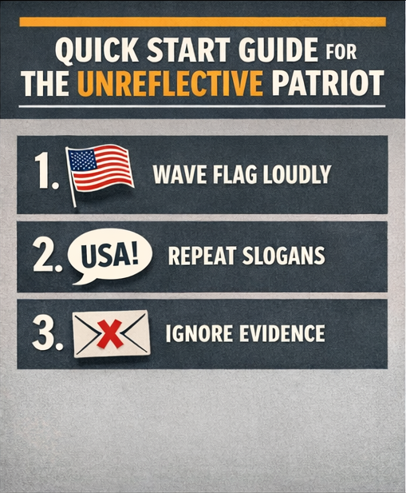
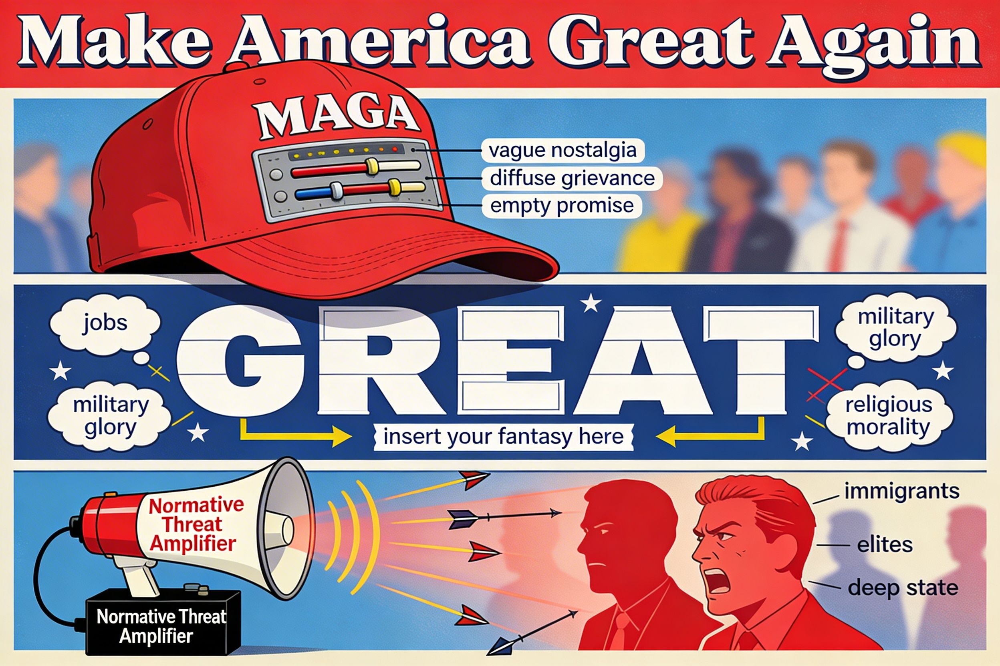
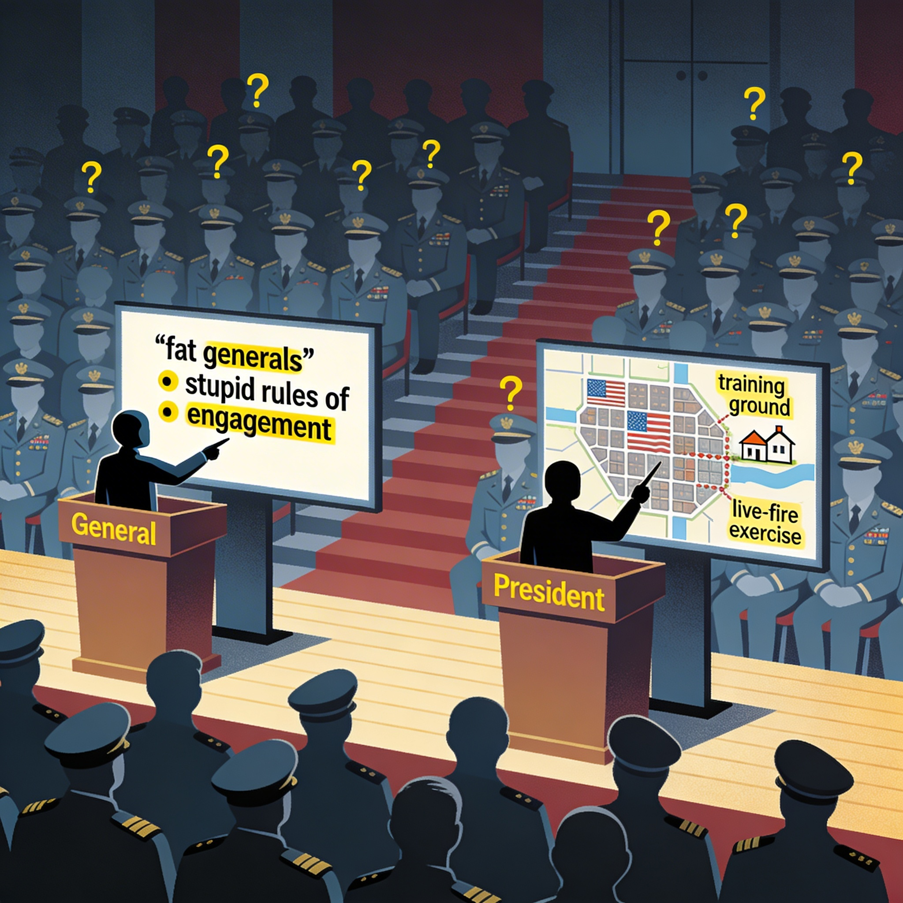
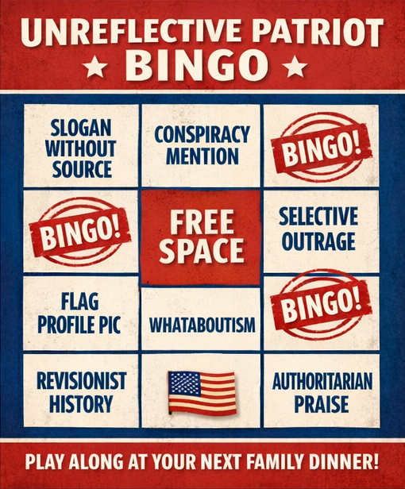
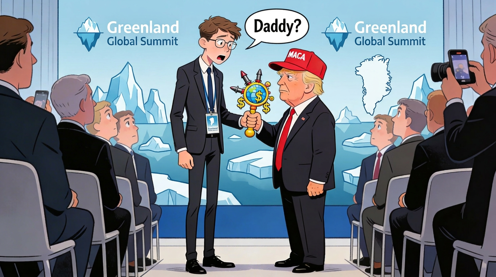
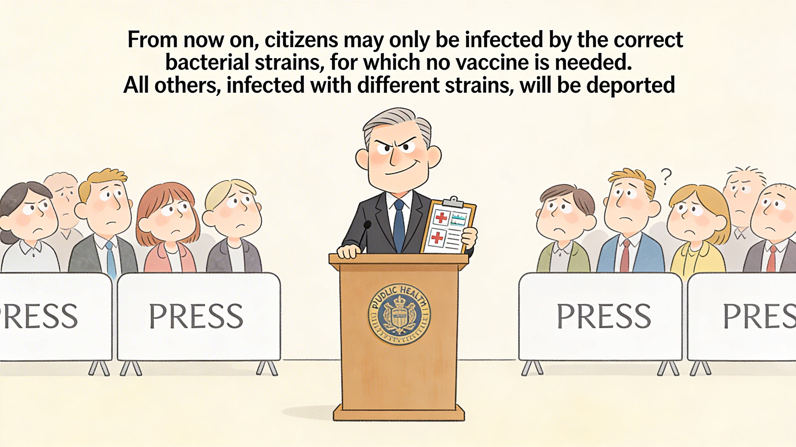
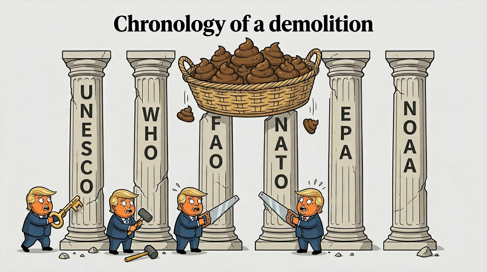
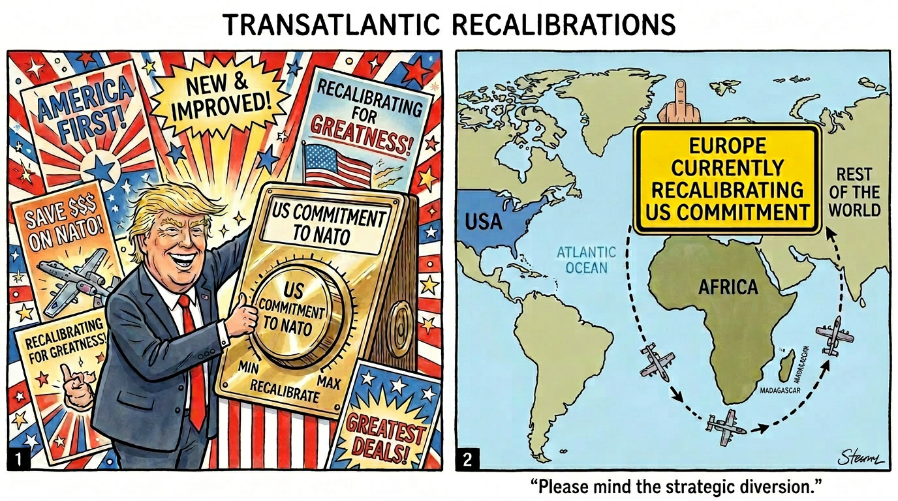

The Unreflective Patriot
A Survival Guide for Sceptics in an Age of Fanaticism and Political Regression — Illustrated
Miguel Moreno ![]()
This essay examines, with academic rigour and the degree of satire that the gravity of the subject demands, the accelerating erosion of the multilateral order constructed in the aftermath of two world wars. From the Russian invasion of Ukraine in 2022 to the Greenland crisis of 2026, through the normalisation of atrocity in Gaza and the transactional instrumentalisation of NATO, the analysis traces how a handful of unscrupulous leaders—self-proclaimed patriots—are dismantling the cooperative mechanisms that enabled the human species to survive its worst instincts. Integrating perspectives from political philosophy, the epistemology of risk, game theory, and the evolutionary biology of social cooperation, the text offers a critical cartography of civic bewilderment in the face of geopolitical regression. It documents the uninhibited display of ignorance, cynicism, and hostility towards the most vulnerable, and argues that informed despondency—far from constituting capitulation—is the ethical prerequisite for any viable form of civic resistance.
geopolitical regression, multilateral cooperation, unreflective patriotism, justice theory, international humanitarian law, political euphemism and accountability, epistemology of risk, existential risk, collective irrationality, game theory, evolutionary biology of cooperation, middle-power diplomacy, institutional erosion, authoritarian populism, hybrid AI–human authorship
Preface: The Bewilderment of the Ordinary Citizen
The optimist believes we live in the best of all possible worlds. The pessimist fears it may be true.
— Attributed to James Branch Cabell (and confirmed by current events)
There is a moment—which each person locates at a different point in their biography—when geopolitical reality ceases to be a tolerable backdrop and becomes a personal affront. For any citizen with a minimal investment in understanding the world—the kind acquired not necessarily in lecture halls but through a newspaper subscription, a working historical memory, or simply the habit of paying attention—that moment arrives as an obscene intrusion on their phone screen: a missile strike on a maternity hospital, a president threatening to purchase an allied nation’s territory, a Secretary of Defence whose principal qualifications appear to be his morning television ratings, a governing philosophy reducible to three words (lethality, lethality, lethality), and crusading iconography tattooed more permanently across his chest than any strategic doctrine into his record.
The bewilderment is not ignorance. It is the legitimate cognitive response of someone who has invested their entire adult life in respecting the rules of a system that promised—at a minimum—not to detonate while the children were being taken to school. That this is not the work of isolated eccentrics but the sustained programme of parliamentary majorities—in Israel and in other countries—whose members would have been catalogued as reactionaries even by the standards of centuries far less acquainted with the cost of fanaticism adds a layer of surrealism that political fiction would struggle to sustain. As Hannah Arendt observed, the banality of evil does not reside in the monstrousness of the perpetrator but in the ordinariness with which the system permits and accommodates the monstrous (Arendt, 1963).
This essay emerges from that bewilderment but aspires to transform it into an analytical instrument. It does not offer consolation—the situation does not merit it; and anyone inclined to dispute this need only listen to any nurse or surgeon from a Gaza operating theatre describe a routine working day over the past year and a half. The register will oscillate between rigorous academic analysis and the satire that certain protagonists have rendered unavoidable through their own words and conduct. This oscillation should not be mistaken for personal indifference to the gravity of what is being documented. It arises, rather, from the cynicism and the total absence of moral caution—personal, professional, or institutional—displayed by those who have gained access to positions of genuinely terrifying institutional reach while conducting themselves as though accountability were a condition reserved for others. When callousness becomes policy and impunity becomes entitlement, the analyst who maintains unbroken solemnity is not being rigorous: they are extending a courtesy these actors have done nothing to merit and everything to forfeit.
If you have arrived here expecting a balanced text presenting “both sides” of the debate on whether it is acceptable to bomb hospitals or threaten allies with tariffs, I regret to inform you that moral symmetry is not a service this guide provides. What it does provide is documentation — and, in measured concession to the prevailing pedagogical orthodoxy that moral comprehension now requires multisensory stimulation, a selection of satirical vignettes and visual allegories for those who find atrocity more legible in pictures than in footnotes.
The structure of the text follows a logic that proceeds from diagnosis to prospective analysis. We begin with the anatomy of the unreflective patriot—that political specimen which has colonised public discourse—before examining the dismantling of the multilateral order, the normalisation of wartime atrocity, the biological-evolutionary substrate of the cooperation we are dynamiting, and finally the prospects—sombre but not foreclosed—for civic resistance. A documentary appendix gathers the declarations, quotations, and headlines that any future historian will require to understand how we were able to see the disaster coming yet failed to do enough to prevent it. A second appendix—A New Catalogue of Civic Virtues—owes its separate existence to the fact that its contents proved too structurally inconvenient to house elsewhere and too revealing to omit.
1 The Anatomy of the Unreflective Patriot
Patriotism is the conviction that your country is superior to all others because you were born in it.
— George Bernard Shaw
1.1 From Tribal Instinct to Drawing-Room Geopolitics
Evolution equipped us with a repertoire of cognitive biases exquisitely designed for survival in small groups: favouring the in-group, distrusting the stranger, following the leader who projects the most confidence—not the most competent one (Kahneman, 2011). For millennia, these mental shortcuts worked reasonably well. The problem arises when they are scaled to the management of nuclear arsenals.
Patriotism, in its most reflective form, involves an active commitment to the institutions, values, and traditions that make civil coexistence viable within a political community. But its unreflective variant—the one that has occupied the headlines and the seats of power—operates in precisely the opposite direction: it replaces commitment with uncritical loyalty, values with symbols, and tradition with nostalgia for a past that, conveniently, never existed quite as it is remembered. Benedict Anderson’s foundational insight that nations are imagined communities—sustained not by organic bonds but by collectively manufactured narratives of shared identity—acquires a particularly sharp relevance when the imagining is done in bad faith (B. Anderson, 1983). The unreflective patriot does not merely imagine a community; they imagine a fortress, besieged by enemies without and betrayed by traitors within, requiring a leader strong enough to punish both.
The psychological architecture of this fortress mentality has been studied with remarkable consistency across seven decades. In 1950, Adorno, Frenkel-Brunswik, Levinson, and Sanford identified its core components: conventionalism, authoritarian submission, authoritarian aggression, a tendency towards stereotypy, and a preoccupation with power hierarchies (Adorno et al., 1950). Their F-scale was methodologically imperfect, but the construct it identified proved durable. Bob Altemeyer spent four decades refining it into the Right-Wing Authoritarianism (RWA) scale, demonstrating that the authoritarian follower is characterised by three interlocking dispositions: submission to perceived legitimate authorities, aggression directed at targets sanctioned by those authorities, and rigid adherence to social conventions (Altemeyer, 1996). In his final work, co-authored with John Dean, Altemeyer applied the RWA scale to a representative sample of American voters and found that over forty per cent of Trump supporters scored in the highest quartile—and that these high-RWA voters were significantly more susceptible to conspiracy theories, including belief in the “Deep State” and denial of electoral legitimacy (Dean & Altemeyer, 2020).
Karen Stenner advanced the analysis a crucial step further. In The Authoritarian Dynamic, she demonstrated that authoritarianism is not a fixed personality trait but a latent predisposition that is activated under conditions of normative threat—particularly when leaders are perceived as unworthy of respect and when consensus on shared values fractures (Stenner, 2005). Approximately one third of the population in any liberal democracy carries this predisposition; in conditions of relative stability, they are indistinguishable from their neighbours. The distinction between Altemeyer’s measurement of authoritarian attitudes and Stenner’s model of authoritarian activation is not merely academic: it explains why societies can experience apparently sudden surges of intolerance that seem to emerge from nowhere, when in fact they were always latent, awaiting the right catalyst.
The catalyst, in the present case, is abundantly available. Social psychology has spent decades documenting the mechanisms by which political tribalism degrades rational processing capacity. Jonathan Haidt’s work on the “righteous mind” demonstrates that moral intuitions precede and condition reasoning, so that arguments function more as advocates for a predetermined conclusion than as impartial judges of evidence (Haidt, 2012). In the current geopolitical context, this means that the voter who has decided their leader embodies national greatness will process contrary evidence—sanctions that damage their own economy, allies who distance themselves, rights that erode—not as warning signals, but as confirmation that “the system” is conspiring against them.

The empirical evidence for this dynamic has now reached a scale that precludes dismissal. A 2024 PRRI survey of over five thousand Americans found that forty-three per cent scored high on the RWA scale, and that those combining high authoritarianism with Christian nationalist sympathies were approximately twice as likely as the general population to endorse the legitimacy of political violence (PRRI — Public Religion Research Institute, 2024). Concurrently, the 2024 American National Election Study recorded the lowest average feeling-thermometer rating of the opposing party in the history of the survey: 26 on a scale of 100, down from 48 in 1978 (American National Election Studies, 2024). Affective polarisation—the tendency to despise the other party not for its policies but for its perceived moral character—has become the dominant feature of American political psychology, and recent comparative research suggests this trend, whilst most extreme in the United States, is accelerating across established democracies (Garzia et al., 2025).
“Make America Great Again” is a masterpiece of cognitive engineering: it combines unspecified nostalgia, diffuse grievance, and an empty promise in four words that any voter can fill with their own fantasy. Had it been submitted for peer review as an empirical hypothesis, it would have been rejected in the first round for the operational indefinability of “great.” But Stenner’s model explains precisely why it works: it is a normative-threat amplifier disguised as a slogan, activating latent authoritarian predispositions by simultaneously evoking decline (the nation has lost its greatness) and identifying enemies responsible for the loss (immigrants, elites, the “deep state”).

1.2 When Ignorance Becomes a Policy of State
There is a crucial distinction between not knowing and not wishing to know. The former is remediable; the latter, when it becomes institutionalised in organs of government, constitutes a form of negligence that in any other professional domain would carry legal liability.
The appointment of Pete Hegseth as United States Secretary of Defence—confirmed by a single tie-breaking vote from the Vice President in January 2025—is a paradigmatic case. Hegseth’s career trajectory, from Princeton undergraduate and Fox News television presenter to the helm of the most powerful defence apparatus in human history, would be unremarkable were the intervening credential something other than ideological loyalty. It is not credentialism to observe that his Senate confirmation hearings, dominated by allegations of personal misconduct, left almost no time for substantive discussion of strategic vision. As analysts at the Stimson Center subsequently noted, Hegseth appeared to possess no articulated worldview regarding military strategy, technological competition, or great-power deterrence (Stimson Center, 2025).
What Hegseth does possess, however, is a governing philosophy of remarkable clarity and alarming implications. His mantra—“lethality, lethality, lethality; everything else is gone”—has been translated into policy with a thoroughness that belies his supposed unsuitability for the role. Within his first year, he fired the top judge advocate generals of the Army, Navy, and Air Force, describing military lawyers as “roadblocks” to presidential orders; dissolved the Pentagon’s Civilian Harm Mitigation and Response Office; closed the Civilian Protection Centre of Excellence established with bipartisan congressional support; and announced fifty billion dollars in cuts to non-lethal programmes (Schake, 2025).
In a speech before the largest assembled gathering of US generals and admirals in American history, Hegseth derided “fat generals” and “stupid rules of engagement,” whilst President Trump, taking the stage after him, told the assembled military that American cities would serve as training grounds (Schake, 2025)—a statement whose implications became disconcertingly legible when federal forces moved against civilians in Minneapolis and beyond, leaving two American citizens dead—Renée Good on 7 January and Alex Pretti on 24 January 2026—amid a cascade of evidence that official federal accounts of both killings were, at minimum, seriously misleading (Rosenberg & ProPublica Staff, 2026; The New York Times, 2026).

The consequences have been concrete. In September 2025, a Washington Post investigation reported that Hegseth issued a verbal order to kill survivors of an initial missile strike on a suspected drug-trafficking vessel in the Caribbean, leading to a second strike against individuals clinging to the wreckage of their ship. Legal experts characterised the alleged order as constituting a war crime. Members of Congress from both parties, including Senator Tim Kaine, concurred. Hegseth dismissed the reports as “fake news” (S. R. Anderson & Orpett, 2025). By March 2026, the United States and Israel were conducting joint military operations against Iran, and Hegseth’s press conferences from the Pentagon had reached rhetorical registers previously unheard from the civilian head of the American military: “no quarter, no mercy for our enemies,” “death and destruction from the sky all day long.” The irony that the Department of Defence had been officially renamed the “Department of War” under his stewardship was lost on no one except, apparently, its occupant.
The phenomenon is not exclusively American. The tendency to place personal loyalty above technical competence has become a recurring pattern, generating what Levitsky and Ziblatt have termed the collapse of institutional gatekeeping: the erosion of the informal norms by which parties historically filtered out demagogues and the manifestly unqualified before they could reach high office (Levitsky & Ziblatt, 2018). Comparative political science has a term for the systematic appointment of loyalists over competent officials—negative selection—and it is a hallmark of regimes in democratic decline. What is novel in the present case is not the phenomenon but its scale: when the most powerful military in human history is governed by a doctrine that equates legal restraint with weakness, the consequences extend far beyond any single nation’s borders.
Verifiable cost of institutionalised incompetence: Between 2017 and 2026, the erratic conduct of US defence and foreign policy imposed measurable costs on NATO cohesion, undermined transatlantic coordination mechanisms, and created strategic vacuums that adversarial actors exploited systematically. The withdrawal from the INF Treaty, the JCPOA, the Paris Agreement, and the Trans-Pacific Partnership—combined with the conversion of alliance commitments into transactional leverage—constituted a pattern that no serious analyst could interpret as anything other than voluntary abdication of hegemonic responsibility (Ikenberry, 2011). This record is a necessary condition for understanding the operational margin that Putin was able to leverage for the full-scale invasion of Ukraine in February 2022, and the emboldening of other actors who calculated that rules-based deterrence had lost its guarantor.

1.3 The Autocrat as Entrepreneur of Chaos
If the unreflective patriot is the consumer of political regression, the autocrat is its producer. Vladimir Putin and his network of functional allies operate according to a remarkably coherent playbook of chaos management: exploiting the structural vulnerabilities of open democracies — polarisation, information fatigue, short electoral cycles — whilst insulating their own societies against any form of scrutiny or accountability (Hill & Stent, 2022; Levitsky & Ziblatt, 2018).
The playbook admits several variants. Viktor Orbán has pioneered its entrист form: operating from within the European Union and NATO to convert democratic institutions into instruments of their own erosion, providing both a legal template and an ideological vocabulary for illiberal governance that others have found exportable (Applebaum, 2020). Recep Tayyip Erdoğan has mastered its transactional form: a NATO member who has systematically leveraged alliance membership to extract concessions, blocked Swedish and Finnish accession for over a year, and maintained a studied ambiguity towards Moscow that has proved strategically profitable for Ankara if not for the alliance. And in 2024, Kim Jong-un supplied artillery shells and infantry to Russian forces in Ukraine, transforming Pyongyang from a peripheral irritant into a functional node of European instability (PRIF — Peace Research Institute Frankfurt, 2024).
Timothy Snyder, in The Road to Unfreedom, traced the intellectual genealogy of this playbook to the Russian philosopher Ivan Ilyin, whose vision of a redeemed Russia — purified through suffering, led by a redeemer-figure, destined to restore civilisational greatness — provides the conceptual scaffolding for Putin’s regime (Snyder, 2018). The joint declaration signed by Putin and Xi Jinping on 4 February 2022 — twenty days before the invasion of Ukraine — was not an anomaly but a geopolitical signal of the first order: a shared imaginary rooted in the first half of the twentieth century, invoking spheres of influence and civilisational blocs as though the intervening decades of institution-building had been a parenthesis to be closed. China’s specific role in this architecture merits separate examination; what the declaration established, unambiguously, was that the West’s choice to read these signals as noise was not an intelligence failure but a failure of political will.
The difference between a competent autocrat and an impulsive one is that the former plans the chaos; the latter generates it accidentally and subsequently claims it as strategy. Maximum danger arises when both types share a stage, because the impulsive actor creates opportunities that the strategic one exploits. The Greenland crisis of January 2026—in which the American president threatened tariffs against eight NATO allies for opposing his claim to purchase a sovereign territory—illustrates this dynamic with a clarity that would have been comic had it not risked fracturing a 77-year alliance (TRENDS Research & Advisory, 2026).
The Adorno-Altemeyer-Stenner framework illuminates this relationship with particular precision. The autocrat functions as the social dominator in Altemeyer’s typology: high in the desire for power, low in empathy, cynically instrumentalising the loyalty of authoritarian followers (Altemeyer, 1996). The unreflective patriot provides the base—submissive to authority, aggressive on its behalf, intolerant of dissent—without which the dominator cannot operate. What Erich Fromm, writing in the shadow of the Second World War, described as the psychological disposition to “escape from freedom” by surrendering autonomy to a strong leader is not a historical curiosity: it is a measurable, activable, exploitable feature of the political landscape in every democracy on Earth (Fromm, 1941).
Josep Borrell, former EU High Representative for Foreign Affairs and Security Policy
“Europe is running the serious risk of becoming a spectator of global fragmentation. The world is reordering itself, and we run the risk of just watching how others are doing it.”
March 2026, in an interview with Agenda Pública titled “The European Union wasn’t conceived for today’s world.” Delivered from his current position as President of CIDOB, Borrell’s assessment distils the institutional critique he sustained throughout his entire mandate: a Union architecturally incapable of geopolitical agency, its decision-making paralysed by unanimity requirements, internal fragmentation, and a decades-long habit of outsourcing hard power to Washington (Hadfield & Demir, 2024). The remark is all the more pointed coming from someone who spent five years attempting, from the inside, to make Europe speak what he called “the language of power” — and who, by his own admission, largely failed.
Mario Draghi — KU Leuven / Atlantic Council, February 2026
“Where Europe hasn’t come together — on defence, foreign policy, and industrial policy — it is treated as a loose assembly of middle-sized states to be divided and dealt with accordingly.”
“A Europe that cannot defend its interests will not preserve its values for long.”
Source: Atlantic Council, 3 Feb 2026
Kaja Kallas, EU High Representative for Foreign Affairs and Security Policy
“Beijing and Moscow are probably celebrating right now.”
January 2026, in reference to the Greenland crisis and the resulting intra-NATO divisions. Kallas’s remark, delivered with diplomatic restraint, captured the strategic absurdity of an alliance whose most powerful member was simultaneously demanding that its allies spend more on collective defence and imposing economic sanctions on those who complied.

2 The Dismantling of the Multilateral Order
International institutions are like the brakes on an automobile: they seem unnecessary until you need to stop.
— Free adaptation for sceptics
2.1 From Bretton Woods to America First: The Chronology of a Demolition
The post-war multilateral order was not an act of generosity; it was a calculation of survival. After two world wars demonstrated—with sixty million dead as empirical evidence—that the system of bilateral alliances and balance of power was a recipe for catastrophe, the victorious powers constructed an institutional scaffolding designed to make cooperation cheaper than conflict: the United Nations, Bretton Woods, GATT, and eventually NATO and the European Community (Ikenberry, 2001; Keohane, 1984).
It was not a perfect system. It was a sufficient one. And for seven decades, despite its shortcomings—Security Council paralysis, IMF asymmetries, selective hypocrisy in the application of international law—it functioned well enough that no great-power war destroyed civilisation. The bar was low, but the achievement was real.
The demolition has been progressive and bipartisan, but it accelerated exponentially from 2017 onwards. Withdrawal from the Trans-Pacific Partnership, the Paris Agreement, the Iran nuclear accord, the Intermediate-Range Nuclear Forces Treaty, the World Health Organisation, and the imposition of tariffs on 190 countries constituted a pattern admitting no benign interpretation: the hegemonic power was voluntarily relinquishing the very instruments of its own hegemony.
What distinguishes the current phase of demolition from prior episodes of American unilateralism—the rejection of the League of Nations, the defunding of UNESCO, the refusal to ratify the Law of the Sea Convention—is its comprehensive and simultaneous character. Previous administrations abandoned individual instruments whilst maintaining the overall architecture. What we are witnessing since 2025 is the deliberate demolition of the architecture itself: the simultaneous dismantling of economic, diplomatic, military, and normative commitments that, taken together, constituted the credibility of American leadership. As Ikenberry argued in his analysis of the liberal international order, hegemonic self-restraint was the price of sustained influence—the bargain by which weaker states accepted American leadership in exchange for the assurance that power would be exercised through institutions rather than raw coercion (Ikenberry, 2011). The current administration has unilaterally repudiated that bargain whilst expecting the benefits of hegemony to persist. This is not grand strategy; it is the geopolitical equivalent of demolishing one’s own house and expecting the roof to remain suspended in mid-air.
The Trump administration’s National Security Strategy of 2025 compounded the structural damage by portraying Europe as a continent in civilisational decline—a rhetorical posture that would have been unremarkable from a Moscow think tank but was unprecedented coming from the notional leader of the Western alliance. The document’s vision of a world organised around bilateral deals, transactional exchanges, and the selective application of force is not a strategy for maintaining order; it is a blueprint for dismantling it.
Were a CEO to simultaneously dismantle their company’s sales department, research and development division, and institutional relations unit, the shareholders would demand their head. When a president does the equivalent with the international order, seventy-four million people vote to give him a second term. When he then launches a war against a country he was simultaneously negotiating with, the share price of the global order enters free fall.

2.2 NATO as a Transactional Hostage
The Atlantic Alliance was conceived as an existential commitment: an attack on one is an attack on all. Article 5 of the Washington Treaty is not a budget line; it is a pledge that democracies will defend one another against aggression. Converting that pledge into an invoice is more than a strategic error: it is a reconceptualisation of the alliance that its adversaries could not have designed more effectively.
The Greenland crisis of January 2026 carried this transactional logic to a previously unthinkable extreme. The American president imposed tariffs of 10%—with threats to escalate to 25%—against eight NATO allies, including Denmark, France, Germany, and the United Kingdom, as a reprisal for their opposition to his territorial acquisition ambitions. As Swedish Prime Minister Ulf Kristersson stated: “We will not allow ourselves to be blackmailed. Only Denmark and Greenland decide on matters concerning Denmark and Greenland.” NATO Secretary-General Mark Rutte’s intervention at Davos achieved a provisional de-escalation, but the damage to the alliance’s credibility had already been done. When an ally imposes economic sanctions against other allies for conducting joint military exercises—Arctic Endurance—that reinforce the collective security the same ally claims to demand, one has entered a territory of strategic incoherence that deterrence manuals do not contemplate.
It takes a particular genius to withdraw from the Trans-Pacific Partnership, the Paris Agreement, the Iran nuclear accord, the INF Treaty, and the World Health Organisation, impose tariffs on 190 countries, and then express bewilderment that the international order is fraying. Previous administrations had the decency to dismantle one multilateral instrument at a time, rather as one might remove load-bearing walls with a certain caution. The current approach—taking a sledgehammer to every wall simultaneously and then blaming the resulting pile of rubble on the neighbours—represents an innovation in strategic self-harm that future historians will study with the same morbid fascination we reserve for the commanders who ordered cavalry charges against machine guns.

But by late February 2026, the transactional logic metastasised into something far more dangerous. On 28 February, the United States and Israel launched a coordinated assault on Iran, striking nuclear facilities, military infrastructure, and leadership targets—including the assassination of Supreme Leader Ali Khamenei—whilst diplomatic negotiations in Geneva were reportedly making progress (Council on Foreign Relations, 2026). The operation, launched without congressional authorisation and in apparent contradiction of the administration’s own stated preference for de-prioritising the Middle East, represented the most significant American military escalation since the 2003 invasion of Iraq. As the Carnegie Endowment’s analysis noted, Trump’s decision to partner directly with Israel in combat operations was unprecedented: no American president had previously committed to fighting alongside Israel in a major campaign rather than merely providing weapons and intelligence (Kurtzer & Miller, 2026). Iran retaliated with ballistic missiles against Israeli cities and American bases across the Gulf, plunging the region into a confrontation whose outcome remains uncertain as of this writing.
The implications for NATO were immediate and devastating. Trump demanded that European allies send naval forces to reopen the Strait of Hormuz—through which one-fifth of global oil supply passes—after Iranian retaliatory strikes disrupted shipping. When allied capitals demurred, noting that NATO is a defensive alliance and that the Iran operation had been launched without allied consultation, the president branded NATO a “paper tiger” and its members “cowards.” The alliance found itself in the grotesque position of being expected to clean up the consequences of a war it had not been consulted about, had not endorsed, and which most of its members’ publics actively opposed.
2.2.1 The Secretary-General’s Abdication of Critical Distance
The conduct of NATO Secretary-General Mark Rutte throughout this sequence of crises demands separate examination, for it illustrates a broader pathology: the confusion of institutional survival with institutional capitulation.
Rutte—the longest-serving prime minister in Dutch history, selected for the post precisely because of his established rapport with Trump—adopted from the outset a strategy of lavish public flattery combined with quiet behind-the-scenes diplomacy. In itself, this is not dishonourable; managing the most powerful and most unpredictable ally has always been part of the secretary-general’s brief. His predecessor, Jens Stoltenberg, employed similar tactics during Trump’s first term, with considerable success in shielding the alliance’s Russia policy from presidential interference (Hooft, 2021).
But there is a categorical difference between managing a difficult ally and endorsing that ally’s most reckless decisions. Rutte’s performance following the Iran strikes crossed the line from diplomacy into complicity. Appearing on Fox News the Monday after the attacks, he characterised the assault as “crucial” for global security, discerned “broad European support” for the operation where none existed, and lauded Trump as “leader of the free world” (Pérez, 2026). At the NATO summit in The Hague in 2025, he had already achieved a certain infamy by referring to Trump as “daddy”—a remark delivered in the context of Iran-Israel tensions that was, at best, a catastrophic misjudgement of register and, at worst, an inadvertent confession of the alliance’s psychological subordination (Hooft, 2026).
As Stephen Walt observed in Foreign Policy, Rutte’s approach suffers from a fundamental strategic miscalculation: Trump respects strength and exploits weakness. By keeping Europe conspicuously dependent and conspicuously deferential, Rutte reinforces precisely the dynamic he claims to be managing. An increasingly capable and autonomous Europe would be a more valuable partner and better equipped to push back when American leadership is headed in dangerous directions. Instead, Rutte has actively opposed European strategic autonomy initiatives, telling Europeans to “dream on” if they thought they could defend the continent without America, and dismissing the idea with a contemptuous “good luck” (Walt, 2026). For a secretary-general whose primary responsibility is the collective security of thirty-two nations, this is not diplomacy; it is the institutional equivalent of Stockholm syndrome.
The consequences are now visible. Rutte’s credibility with major European capitals—Paris, Berlin, Madrid, and increasingly London—is severely compromised. As Claudi Pérez wrote in El País, the question of whether Rutte, von der Leyen, and Kallas constitute the worst leadership triumvirate in Brussels in decades “may well be answered in the affirmative, at the worst possible moment” (Pérez, 2026). Spain, Germany, France, and the United Kingdom have all rejected participation in any NATO-adjacent operation to reopen the Strait of Hormuz. Trump’s war with Iran, as a German government spokesperson stated with uncharacteristic bluntness, “is not NATO’s war.”
Verifiable fact: The United States Supreme Court ruled on 20 February 2026, in a 6-3 decision, that the International Emergency Economic Powers Act (IEEPA) does not authorise the imposition of tariffs. The president responded by imposing a 10% tariff under Section 122, which expires in 150 days. According to the Tax Foundation, tariffs imposed in 2025–2026 represent the largest tax increase as a percentage of GDP since 1993 and amount to an average additional burden of $1,500 per American household (Tax Foundation, 2026). Meanwhile, the administration lifted sanctions on Russian oil exports to ease domestic fuel prices driven up by the Iran war—a move that, as Ukrainian President Zelenskyy observed, channels billions directly to the Russian war machine the same alliance is nominally opposing.

2.2.2 The Arsonist as Former Fire Chief: Withdrawal from International Health Governance
There is a particular species of institutional vandalism that deserves separate attention, because it reveals the self-defeating logic of the current demolition with crystalline clarity: the withdrawal from organisations that the United States itself created, funded, and used as instruments of its own global influence.
On 22 January 2026, the United States formally completed its withdrawal from the World Health Organisation—an institution it had been instrumental in establishing in 1948, and to which it had been, for seven consecutive decades, the single largest contributor, providing approximately $680 million annually in assessed and voluntary contributions combined (12–15% of the WHO’s total budget) (Auwal et al., 2025; Ortiz-Prado et al., 2025). The stated justification—mismanagement during the COVID-19 pandemic and disproportionate financial burden—is not without a kernel of legitimacy: the WHO’s early handling of the pandemic was indeed criticised, and burden-sharing among member states was uneven. But the remedy chosen—complete withdrawal rather than reform from a position of overwhelming institutional leverage—is the equivalent of a majority shareholder selling their entire stake in a company they control because they dislike the catering at board meetings.
The collateral damage is not hypothetical; it is already measurable. The President’s Emergency Plan for AIDS Relief (PEPFAR), launched under George W. Bush in 2003 and widely regarded as the most successful global health initiative in American history, had supported antiretroviral treatment for over 18 million people living with HIV and contributed to a near-halving of AIDS-related deaths worldwide over the preceding decade. Under the current administration’s broader dismantling of USAID—absorbed into the State Department in 2025—PEPFAR-funded programmes have been suspended or severely curtailed in countries including El Salvador, Guatemala, Haiti, and Jamaica, where they covered between 50% and 60% of HIV services (Auwal et al., 2025). As Johns Hopkins Bloomberg School of Public Health researchers observed: if participation in the WHO seems expensive, the true costs of non-participation—in disease surveillance capacity, pandemic preparedness, and diplomatic influence—will prove incalculably greater (Johns Hopkins Bloomberg School of Public Health, 2025). The irony is exquisite: the administration that withdrew from the WHO on grounds of protecting American interests has simultaneously eliminated the early warning systems, collaborative research networks, and institutional relationships that constitute the first line of defence against the next pandemic reaching American shores.
The broader pattern is worth stating plainly. The United States built the post-war architecture of global health governance not from altruism but from strategic calculation: healthy populations are stable populations; stable populations do not generate refugee crises; disease surveillance abroad is cheaper than containment at home; and the gratitude of nations whose children survive thanks to American-funded vaccines translates into diplomatic capital that no aircraft carrier can replicate. To dismantle this architecture in the name of “America First” is to confuse the instrument with the cost, the investment with the expenditure—and to hand to China, on a silver platter, the soft-power vacuum that decades of American public health leadership had filled.
In a development that surprised absolutely no one who has been paying attention, a senior federal health official recently clarified that henceforth American citizens would only be permitted to contract patriotically approved strains of infectious disease—those requiring neither vaccination nor international cooperation to manage. Unapproved pathogens, being of foreign origin and therefore inherently suspect, would be subject to immediate deportation proceedings. The Centers for Disease Control—its staff now prohibited from co-authoring papers with WHO colleagues—confirmed that it was developing a rapid screening protocol to distinguish between liberty-loving microorganisms and those harbouring globalist sympathies. Epidemiologists worldwide await further guidance.

2.3 International Institutions: From Paralysis to Irrelevance
The United Nations and the Organisation for Security and Co-operation in Europe proved incapable of preventing or halting the war in Ukraine. As Hill and Stent have documented, these institutions appear increasingly to be victims of the distorted vision of the past that Putin defends, and are poorly structured to address the challenges of the present (Hill & Stent, 2022).
On 24 February 2026, four years to the day after the Russian invasion, the General Assembly adopted—by 107 votes in favour, 12 against, and 51 abstentions—a resolution demanding an immediate ceasefire in Ukraine. That is to say, after four years of systematic killing, more than 15,000 verified civilian deaths (including 775 children), and more than 42,000 wounded, the best the international community could produce was a piece of paper that Russia ignored before the ink had dried.
The paralysis is not accidental; it is structural. The Security Council, designed in 1945 to reflect the power configuration of the post-war settlement, grants permanent veto power to the five victors of a war that ended eighty-one years ago. When one of those veto-holders is itself the aggressor, the institution that was designed to prevent exactly this situation is rendered constitutionally incapable of addressing it. Russia has vetoed every substantive resolution on Ukraine since 2014. This is not a malfunction of the system; it is the system functioning as designed—for a world that no longer exists.

The International Criminal Court, for its part, has issued an arrest warrant against Putin for the deportation of Ukrainian children. The warrant remains, as of March 2026, unexecuted—a tribute to the gap between international legal aspiration and political reality. Meanwhile, the ICC’s credibility as an impartial institution has been further damaged by the perception of selective prosecution: warrants for Israeli leaders in connection with operations in Gaza have been met with open defiance from the United States and muted compliance at best from European capitals that purport to champion the rules-based order.
But perhaps the most revealing indicator of institutional irrelevance is the sheer scale of the human toll that these institutions have failed to prevent or mitigate. The numbers deserve to be stated plainly, because they represent the empirical verdict on the multilateral system’s capacity to protect human life.
The arithmetic of institutional failure: As of early 2026, the conflicts that the multilateral system has failed to prevent, halt, or meaningfully constrain have produced a combined toll whose scale demands systematic documentation. In Ukraine alone, OHCHR had verified 56,550 civilian casualties by 31 January 2026 (15,172 killed and 41,378 injured), whilst acknowledging that actual figures are likely considerably higher. Russian military casualties are estimated at 1.2 million (killed, wounded, and missing), including an estimated 267,000–385,500 deaths—more than in all of Russia’s wars since 1945 combined. Ukrainian military losses, though less precisely quantified, are estimated at 250,000–600,000 casualties, with 55,000–140,000 killed. Ukraine has lost approximately 70% of its electricity generation capacity, and some 10.8 million people require humanitarian assistance.
In Gaza, the Ministry of Health reported more than 75,000 Palestinians killed and over 171,000 wounded between October 2023 and March 2026—figures that a landmark study published in The Lancet Global Health has confirmed represent a significant undercount, estimating approximately 75,200 violent deaths in the first fifteen months alone, 34.7% above the official tally (Spagat et al., 2026). In the occupied West Bank, more than 1,071 Palestinians have been killed since October 2023, including at least 233 children.
In Lebanon, Israeli operations killed over 4,047 people and injured more than 16,600 between October 2023 and the November 2024 ceasefire—with a further 331 killed during the ceasefire itself. And as of this writing, the US-Israeli assault on Iran, launched on 28 February 2026, continues with an uncertain and potentially catastrophic trajectory, adding to a toll that no institution has been structured or empowered to contain.
The international system has a design flaw: it was built for a world in which shame functioned as a mechanism of constraint. When the principal actors discover that they can disregard resolutions, treaties, and international court judgements without palpable consequences, the system does not collapse in one dramatic and mobilising event—it simply becomes irrelevant, which is considerably worse. One might add a corollary: when the same actors discover that they can launch a war in the middle of diplomatic negotiations and face no institutional consequences, the system has passed from irrelevance into active farce.

3 Wars on Demand: Ukraine, Gaza, and the Normalisation of Atrocity
First they came for the communists, and I did not speak out—because I was not a communist…
— Martin Niemöller (1946), with undiminished contemporary relevance
3.1 Ukraine: The Confrontation Nobody Wished to See
The Russian invasion of Ukraine on 24 February 2022 was not a bolt from a clear sky. It was the predictable outcome of two decades of ignored signals, unheeded warnings, and red lines that proved to be dotted lines. From Georgia in 2008 to Crimea in 2014, the pattern was sufficiently clear that surprise could only be explained by an active determination not to see (Moreno Muñoz, 2022; Núñez Villaverde, 2022).
Four years on, the balance is devastating. The UN Human Rights Monitoring Mission in Ukraine verified that 2025 was the deadliest year for civilians since 2022, with 2,514 killed and 12,142 injured—a 31% increase over 2024. The cumulative toll, by 31 January 2026, stood at 56,550 verified civilian casualties: 15,172 killed (including more than 600 children) and 41,378 injured, with OHCHR acknowledging that actual figures are likely considerably higher given the impossibility of verification in occupied territories and areas of active combat. In February 2026 alone, 188 civilians were killed and 757 injured, including from an intensified campaign of long-range strikes that, in the words of HRMMU head Danielle Bell, meant “the consequences of the war are now felt by civilians far beyond the frontline.”
The military toll is proportionally staggering. The Center for Strategic and International Studies (CSIS) estimated in January 2026 that Russian forces had suffered approximately 1.2 million casualties (killed, wounded, and missing), with as many as 325,000 deaths—a figure corroborated by the UK Ministry of Defence estimate of 1.17 million and the Estonian Foreign Intelligence Service’s assessment of one million killed or wounded. BBC News Russian and Mediazona, cross-referencing multiple independent sources, documented at least 267,000 confirmed Russian deaths by February 2026, a figure they acknowledged as a lower bound. The CSIS report noted that these casualty levels are extraordinary: no major power has suffered anything comparable since the Second World War, exceeding the toll of all Russian conflicts since 1945 combined—including both Chechen wars and the Soviet occupation of Afghanistan (Jones & Wasielewski, 2026). Ukrainian military casualties, though less precisely documented, were estimated by the same CSIS report at 250,000–600,000, with between 100,000 and 140,000 killed. President Zelenskyy acknowledged 55,000 Ukrainian military deaths by early 2026, a figure analysts consider significantly understated. The National Health Service of Ukraine reported 95,000 officially recorded amputations—a figure that, including procedures conducted abroad, may reach 120,000.
Meanwhile, Russia’s systematic campaign against civilian infrastructure had destroyed approximately 70% of Ukraine’s electricity generation capacity, reducing it from 33.7 GW to approximately 14 GW. Residents of Kyiv faced up to sixteen hours per day without power; an estimated 600,000 people fled the capital during the winter of 2025–2026 alone. As DTEK’s CEO stated, the energy sector had suffered “the most powerful blow” since the start of the invasion.
Europe found itself diplomatically marginalised from the peace process. As the PRIF (Peace Research Institute Frankfurt) documented, European governments avoided direct engagement with Putin, finding it less politically costly—in terms of domestic politics—to react with disdain to the Trump administration’s negotiating activities than to take diplomatic initiative themselves (PRIF — Peace Research Institute Frankfurt, 2026). Trump’s 28-point peace plan, unveiled in November 2025, proposed that Ukraine cede not only Russian-occupied territory but also areas currently under Kyiv’s control—terms that Zelenskyy declared unacceptable. By March 2026, US-led diplomatic attempts had stalled, with Russia rejecting a draft plan for European peacekeepers.
The arithmetic of horror: In 2025 alone, civilian casualties from short-range drone strikes increased by 120%, rendering many frontline areas effectively uninhabitable. Russia attacked Ukrainian cities with nearly 300 missiles and more than 5,000 drones in a single month—the highest figures since its systematic campaign against the civilian population began. From October 2025 through January 2026, Ukraine’s intelligence service logged 256 drone and missile strikes specifically targeting energy facilities: 11 on hydroelectric plants, 94 on thermal power stations, and 151 on substations. Intentionally targeting civilians and civilian objects constitutes a war crime. One third of Ukrainian children remain displaced as a consequence of the Russian aggression (United Nations News, 2026).

3.2 Gaza: The Laboratory of Suffering Without Consequences
If Ukraine illustrates the multilateral system’s impotence in the face of a major nuclear power, Gaza exposes something more disturbing: the capacity of the same system to look away whilst what the United Nations Office of the High Commissioner for Human Rights has characterised as patterns raising concern for ethnic cleansing is being documented in real time (OHCHR, 2026).
3.2.1 The Scale of Destruction
The figures, as of March 2026: the Gaza Ministry of Health reported more than 75,000 Palestinians killed in the Gaza Strip and over 171,000 wounded since 7 October 2023. Among the dead, at least 391 UNRWA workers, more than 248 journalists, and over 224 humanitarian aid workers. Scholars have estimated that approximately 80% of those killed were civilians. An OHCHR verification study found that 70% of Palestinians killed in residential buildings were women and children.
But these figures—already staggering—represent a lower bound. A landmark population-representative household survey published in The Lancet Global Health, the Gaza Mortality Survey, estimated 75,200 violent deaths between October 2023 and January 2025 alone—34.7% higher than the Ministry of Health’s figure of 49,090 for the same period (Aldabbour & Irfan, 2026; Spagat et al., 2026). In January 2026, an Israeli military official publicly accepted, for the first time, the Ministry of Health’s tally of approximately 71,000 deaths—a tacit acknowledgement that the figures Israel had spent months attempting to discredit were, if anything, conservative. The GMS researchers concluded that the Ministry’s figures represent a reliable “floor” rather than a ceiling, noting that the collapse of the very infrastructure required to document death makes systematic undercounting inevitable.
Since the ceasefire of October 2025, at least 640 more Palestinians have been killed and 1,707 wounded. The OHCHR report documented that at least 463 Palestinians, including 157 children, died of starvation—a direct result of the Israeli blockade of humanitarian aid—and concluded that the use of starvation as a method of warfare constitutes a war crime (OHCHR, 2026). The predictive injury model published in eClinicalMedicine, led by researchers at Duke University and Gaza’s al-Shifa Hospital, quantified 116,020 cumulative injuries by April 2025, of which between 29,000 and 46,000 require complex reconstructive surgery that Gaza’s decimated healthcare system is no longer capable of providing. Gaza now has the highest number of child amputees per capita in the world.
3.2.2 The Wider Theatre: West Bank, Lebanon, and Iran
The violence has not been confined to Gaza. In the occupied West Bank, OCHA documented 1,071 Palestinians killed between 7 October 2023 and 15 March 2026, including at least 233 children. Settler violence intensified dramatically in 2026, with monthly averages of over 100 Palestinians injured and 600 displaced—compared with 69 injured and 138 displaced per month in 2025. Displacement linked to settler attacks in the first quarter of 2026 alone had already reached 95% of the total recorded in the whole of 2025.
In Lebanon, the toll of the Israel-Hezbollah conflict was devastating. The Lebanese Ministry of Public Health reported 4,047 killed and 16,638 injured between October 2023 and the ceasefire of 27 November 2024—a conflict that included the deadliest single day in Lebanon since the end of the civil war (558 killed on 23 September 2024 alone). UNICEF reported children among the dead; Amnesty International documented strikes on residential buildings, refugee camps, and a municipal headquarters during a humanitarian coordination meeting, describing patterns consistent with war crimes. The ceasefire itself proved largely nominal: UNIFIL documented more than 7,500 Israeli airspace violations and 2,500 ground violations; OHCHR verified at least 127 civilian deaths during the supposed cessation of hostilities; Lebanese authorities reported a total of 331 killed and 945 injured in the year following the ceasefire. The World Bank estimated total economic damages to Lebanon at $14 billion, with reconstruction costs of $11 billion.
And then, on 28 February 2026, the theatre expanded catastrophically. The US-Israeli assault on Iran—launched, in the assessment of the Arab Center Washington DC, at the precise moment that negotiations were making progress, and apparently designed to prevent rather than achieve a diplomatic settlement—opened a new front whose ultimate dimensions remain unknown at the time of writing (Arab Center Washington DC, 2026). Retired Colonel Lawrence Wilkerson, former chief of staff to Secretary of State Colin Powell, characterised the strikes as involving the deliberate targeting of civilian infrastructure, including schools and hospitals, constituting “wanton war crimes” (Wilkerson, 2026). The spectre of nuclear escalation—raised by Wilkerson’s assessment that Netanyahu might resort to nuclear weapons should the campaign go badly—places the current moment in a category of existential risk that the multilateral system was specifically designed to prevent and has manifestly failed to address.
3.3 Inaction as Complicity: An Epistemology of Omission
There is a concept in moral philosophy that proves particularly useful here: the distinction between doing and allowing. Although the Western ethical tradition has tended to consider action more blameworthy than omission, contemporary ethics has severely questioned this asymmetry when the omission is deliberate and its consequences foreseeable (Singer, 1972).
The complicity of omission operates at multiple levels, and each level involves a distinct epistemic failure. At the first level, there is the omission of information: the failure to know what is occurring. This form of ignorance, in an era of satellite imagery, real-time social media documentation, and verified reporting by organisations such as OHCHR, OCHA, and Médecins Sans Frontières, is no longer plausibly involuntary. The citizen who does not know about the scale of destruction in Gaza or the targeting of Ukrainian civilian infrastructure in March 2026 has chosen not to know—and that choice, as Nichols argued in his analysis of the “death of expertise,” is itself a civic failure with collective consequences (Nichols, 2017).
At the second level, there is the omission of interpretation: the refusal to call what is occurring by its proper name. When the OHCHR documents patterns consistent with ethnic cleansing and a report in The Lancet confirms that the official death toll is a significant undercount, the euphemism is complicity. When a retired senior American military official describes ongoing operations as “wanton war crimes,” the diplomatic circumlocution is not neutrality; it is a choice to protect the perpetrator from the weight of accurate language. The linguistic strategies employed by Western governments—“we call on all parties to exercise restraint,” “the situation is complex,” “we are concerned by reports of…”—function as epistemic shields that permit inaction by substituting bureaucratic caution for moral clarity.
At the third level, there is the omission of action: the failure to employ available mechanisms of constraint. This is where the institutional dimension becomes decisive. The International Criminal Court has jurisdiction but lacks enforcement. The Security Council has enforcement mechanisms but lacks the will to use them (or, more precisely, is structurally prevented from using them by the veto). The General Assembly can pass resolutions but cannot compel compliance. The result is a system in which every institution has a reason why the problem is someone else’s responsibility, and the civilians under bombardment are left without any institution whose responsibility they unambiguously are.

As Santiago Alba Rico observed with a lucidity that merits wider currency: accepting the invasion of Ukraine as inevitable, as a mechanical corollary of historical accumulation, amounts to accepting as inevitable everything that may occur henceforth. But what is inevitable in war is always more war and more destruction. Putin bears responsibility for a criminal decision that interrupts every mechanistic chain of causation, and which can only be deactivated through other decisions (Alba Rico, 2022).
The same logic applies, mutatis mutandis, to the normalisation of atrocity in Gaza. The framing of the conflict as a “response to 7 October” contains an implicit temporal boundary that erases the decades of occupation, dispossession, and structural violence that preceded it. As Peter Singer argued in his foundational analysis of moral obligation across distance, the mere fact that we are not the proximate cause of suffering does not absolve us of responsibility when we have the capacity to prevent it and choose not to do so (Singer, 1972). The geographic and psychological distance between European capitals and the ruins of Gaza is not a moral extenuation; it is the very condition that the multilateral system was designed to overcome.
There is a word for the policy stance that combines rhetorical condemnation with practical inaction: it is called managed indifference, and it has a distinguished pedigree in European diplomacy. The innovation of the current moment is that managed indifference is now practised in real time, under the gaze of cameras, with satellite verification, and with the full awareness that future historians will have access to every document, every diplomatic cable, and every vote in the Security Council. The alibi of “we didn’t know” is no longer available. What remains is “we knew, and we calculated that the political cost of action exceeded the moral cost of inaction.” That calculation is the subject that accountability mechanisms exist to examine.

4 Betrayed Biology: Social Cooperation as Evolutionary Advantage
In the long history of humankind (and animal kind, too), those who learned to collaborate and improvise most effectively have prevailed.
— Charles Darwin (paraphrased; the urgency is editorial)
The reader accustomed to the idiom of political philosophy may wonder why a monograph on geopolitical recklessness turns, at this stage, to evolutionary biology rather than to Rawls, Walzer, or the more academically respectable precincts of normative theory. The answer is simple and, for the theorists in question, somewhat unflattering: the normative frameworks have been available for decades, impeccably argued and comprehensively ignored. The leaders dismantling the multilateral order have not failed to read Rawls—or at any rate, Princeton offered them the syllabus and several Florida universities within driving distance of Mar-a-Lago presumably did likewise; they have read him, or had every opportunity to, and found him irrelevant to the exercise of power. What they have not read—and what they cannot so easily dismiss—is the fossil record. Political theories can be debated, reinterpreted, or declared obsolete by the next tenure committee. Extinction is peer-reviewed by natural selection, and its editorial standards are non-negotiable.
4.1 Homo sapiens: The Primate That Cooperates (Except in Power)
The biology of cooperation offers a perspective that should embarrass any leader who treats multilateral institutions as bureaucratic inconveniences to be discarded on a whim: large-scale cooperation is, quite literally, the defining competitive advantage of our species. We are not the strongest primates, nor the fastest, nor the ones with the most formidable dentition. We are the ones who cooperate best—and the fossil record of every hominin lineage that did not is a chronicle of extinction (Nowak & Highfield, 2011; Tomasello, 2009).
Michael Tomasello’s research programme at Duke University (formerly the Max Planck Institute for Evolutionary Anthropology in Leipzig) has demonstrated, across three decades of comparative experiments with human infants and great apes, that humans develop from the earliest months of life a capacity for shared intentionality—the ability to form joint goals, coordinate plans with others, and construct common ground—that has no parallel among other primates (Tomasello, 2009; Wolf & Tomasello, 2025). Chimpanzees can cooperate instrumentally when mutual benefit is obvious, but they cannot share intentions in the way a fourteen-month-old human child does when she points at an aeroplane or a colourful dragon not to request it, but simply to share the experience of seeing it with her caregiver. This seemingly trivial capacity—pointing for the sheer pleasure of joint attention—is the cognitive seed from which language, institutions, normative systems, and the entire architecture of civilisation grew. That the adults who govern us now prefer to point at oil barrels is a developmental regression that Tomasello’s framework, to its credit, did not anticipate.
The framework has, however, continued to develop in directions that sharpen its relevance. Tomasello’s most recent formulation, developed in his 2019 monograph Becoming Human and extended in subsequent work on human agency (Tomasello, 2019, 2022), distinguishes two evolutionary stages: joint intentionality, emerging roughly 400,000 years ago among early Homo engaged in collaborative foraging, and collective intentionality, emerging with the formation of large cultural groups structured by conventions, norms, and institutions. The first stage gave us the ability to hunt together; the second gave us the ability to build nations, draft constitutions, and establish international tribunals. Both stages are products of natural selection operating on the cognitive infrastructure that makes cooperation possible.
Edward O. Wilson, approaching the same question from the perspective of sociobiology and multilevel selection theory, framed our species as a “eusocial” primate—one of only about twenty species on the planet (the rest being insects, marine crustaceans, and rodents) that have achieved the highest level of social organisation, characterised by cooperative brood care, division of labour, and some degree of reproductive altruism across multiple generations (E. O. Wilson, 2012, 2019). Wilson’s argument, controversial among evolutionary biologists for its emphasis on group selection over kin selection, nonetheless illuminates a point of direct political relevance: the traits that enabled our ecological dominance—our capacity to sacrifice individual advantage for collective benefit, to coordinate across unrelated individuals, to enforce norms that constrain free-riding—are fragile. They are, in Wilson’s terms, “evolutionarily newer and more fragile” than our selfish impulses, and “must be vociferously promoted by the group if the group is to survive.”
Joseph Henrich’s work on cultural evolution adds a crucial layer: what distinguishes Homo sapiens from all other species is not raw intelligence but cumulative culture—the capacity to accumulate and transmit innovations across generations in ways that no single individual could achieve alone (Henrich, 2015). A modern smartphone contains more technological knowledge than any single human mind could hold. This is not because we are individually brilliant; it is because we cooperate across time, transmitting, refining, and building upon each other’s discoveries. The multilateral institutions that the unreflective patriot treats with such contempt—the WTO, the Paris Agreement, the International Court of Justice—are, from this perspective, instances of cumulative cultural cooperation at civilisational scale. They represent centuries of institutional learning, encoded in treaties and norms, about how to prevent the catastrophic outcomes that states reliably produce when left to interact without binding constraints.
To dismantle them is not merely to change policy. It is to attack the mechanism that defines our species.
Here, then, is the evolutionary irony that the architects of America First seem unable to grasp: the very traits they disparage as weakness—compromise, multilateral negotiation, institutional constraint on sovereign caprice—are the traits that allowed a physically unremarkable primate to conquer every ecosystem on the planet. The species that cannot cooperate goes extinct. The species that chooses not to cooperate is performing an experiment in self-extinction with the entire biosphere as the laboratory. From a strictly Darwinian perspective, the leader who dismantles cooperation to maximise short-term advantage is executing the strategy of the parasite: exploit the host organism until collapse, trusting that the crisis will not arrive on one’s own watch. Biology has a word for this strategy: pathogenic.

4.2 Game Theory and the Erosion of Reciprocity
Robert Axelrod demonstrated in the 1980s, through a series of computer tournaments that became foundational for both evolutionary biology and political science, that the most successful strategy in iterated Prisoner’s Dilemma games is Tit for Tat (TFT): cooperate on the first move and thereafter replicate the other player’s previous action (Axelrod, 1984). The elegance of TFT lies in its being simultaneously cooperative (it starts by cooperating), retaliatory (it punishes defection immediately), forgiving (it cooperates again as soon as the other player cooperates), and transparent (the other player can easily understand what it will do). These properties made it the tournament winner against far more complex strategies, a result that Axelrod himself found both surprising and profoundly instructive.
Martin Nowak subsequently expanded Axelrod’s framework by identifying five distinct mechanisms through which cooperation can evolve: kin selection, direct reciprocity, indirect reciprocity, network reciprocity, and group selection (Nowak, 2006). Each mechanism operates at a different scale, but all share a common structural requirement: a sufficiently long time horizon. Cooperation flourishes when actors expect to interact repeatedly and indefinitely; it collapses when the game becomes finite and the end is in sight. This is not a metaphor. It is a mathematically demonstrable property of strategic interaction, derivable from first principles.
The post-war multilateral order functioned, in essence, as a vast iterated game in which TFT operated at institutional scale: states cooperated because they expected to go on interacting indefinitely, and institutions existed to make that expectation credible. The United Nations, NATO, the WTO, the Bretton Woods institutions—whatever their imperfections—served as commitment devices, raising the reputational cost of defection and extending the shadow of the future into the present (Ikenberry, 2001; Keohane, 1984).
The catastrophic signal introduced by the America First doctrine—and its successors and imitators across the globe—is that each round may be the last. When the most powerful player announces that past cooperation generates no credit for the future, that alliances are transactional commodities to be renegotiated from zero at each interaction, that treaties are provisional instruments revocable at will, it is signalling that the game is no longer iterated. It is a one-shot game. And in one-shot games, the only rational strategy is to defect.
This is precisely the defection cascade that game theorists predict and that we are now observing in real time. The 2026 Global Cooperation Barometer, published by the World Economic Forum, documents the pattern with granular precision: metrics reflecting multilateral cooperation have fallen by more than 20% since 2019, while the peace and security pillar has seen every tracked indicator drop below pre-pandemic levels (World Economic Forum, 2026). Conflicts have escalated, military spending has risen globally, and multilateral resolution mechanisms have proved unable to de-escalate any major crisis. The Barometer’s own framing is cautiously optimistic, noting that “mini” lateral cooperation among smaller groups of aligned states is partially compensating for the erosion of multilateral structures. This is the equivalent of celebrating that some passengers have found functioning lifeboats while the ship is sinking.
A brief note on the strategic brilliance of converting a repeated game into a one-shot game when you are the most powerful player: it is the rational move only if you are certain you will never need cooperation again. Given that the challenges ahead—climate disruption, pandemic preparedness, nuclear proliferation, AI governance, mass migration—are by definition collective-action problems that no single state can solve unilaterally, this certainty is either delusional or nihilistic. The charitable interpretation is delusion. The evidence increasingly supports nihilism.

The academic literature on cooperation collapse provides a further, darker insight. A 2026 study revisiting Scodel and Minas’s classic experiments of the early 1960s through the lens of evolutionary game theory demonstrated a persistent human tendency to reduce an opponent’s payoff even when mutual cooperation is individually optimal—a phenomenon the authors describe as concern for relative payoff rather than absolute gain (Shutters, 2026). In plain language: subjects repeatedly chose to make themselves worse off in absolute terms, provided they could make the other player even worse off. Transposed to international relations, this finding illuminates something that rational-choice models struggle to explain: why states would sabotage institutions that serve their own interests, provided the sabotage harms rival states even more. It is the logic of the arsonist who burns his own house to deny it to the enemy—a logic that only makes sense if you believe you have another house to go to.
Michael Lewis spent much of The Fifth Risk (2018) documenting what happens when an incoming administration cannot be persuaded to attend its own briefings: the expertise accumulated over decades by career civil servants goes untransferred, the risks nobody bothered to catalogue go unmanaged, and the government continues to function — for a while — on institutional memory that is quietly haemorrhaging. Lewis’s fifth risk is not nuclear war or financial collapse; it is the vacancy where competent administration used to be. The image below requires no caption for readers who have met the argument.
4.3 The Phylogenetic Cost of Collective Irrationality
The destruction of multilateral cooperation mechanisms is not merely a political event. From an evolutionary perspective, it is an immunological crisis. The systems of international cooperation that the current generation inherited function as social antibodies: they do not eliminate the possibility of conflict, but they reduce its probability, limit its escalation, and channel its resolution toward outcomes compatible with collective survival (Diamond, 2005; Henrich, 2015).
When these systems are neutralised—through treaty withdrawal, institutional sabotage, the discrediting of shared norms, the elevation of transactional cynicism to the status of strategic doctrine—the social organism is left exposed to infections that, under normal circumstances, would be contained before becoming lethal. The analogy to immunology is not ornamental. It captures a structural property that political analysis tends to overlook: the asymmetry between construction and destruction. Immune systems take generations to develop; they can be destroyed in months. Institutional trust accumulates slowly, through thousands of iterated interactions that demonstrate reciprocity and reliability; it evaporates at the first credible signal of defection.
Consider the empirical evidence on what happens when cooperative frameworks collapse. Jared Diamond’s comparative analysis of societal collapse—from Easter Island to the Maya, from the Norse Greenland colony to modern Rwanda—identified a recurring pattern: societies that dismantled their environmental and institutional feedback loops did not degrade gradually; they collapsed catastrophically, often within a single generation of the point at which the feedback mechanisms ceased to function (Diamond, 2005). The transition from “everything is still working” to “nothing is working” was, in every documented case, far shorter than the accumulated degradation that preceded it.
Phylogenetic alert: The human species invested approximately 400,000 years in developing the cognitive capacities for large-scale cooperation—from the joint intentionality of early Homo foragers to the collective intentionality that would eventually sustain institutions, treaties, and normative systems. Upon that biological substrate, it then took roughly 12,000 years—from the first permanent settlements to the Universal Declaration of Human Rights—to build the institutional infrastructure that separates civilisation from the Hobbesian state of nature. The construction-destruction asymmetry is not a bug of the system; it is its most dangerous vulnerability, and the current occupants of power know it (Diamond, 2005; Henrich, 2015).
A handful of leaders are now demonstrating that both layers—the cognitive and the institutional—can be attacked simultaneously and dismantled in less than a decade. One must concede a certain dark grandeur to the project. The unreflective patriot, armed with a social media account and a base that mistakes aggression for strength, is showing that the distance between civilisation and the state of nature can be traversed in reverse in rather less time than it took to build. Future palaeontologists—assuming something survives to practise palaeontology—may find this the most remarkable acceleration event in the geological record since the Chicxulub asteroid.

This non-linearity has a direct parallel in the current erosion of the multilateral order. The institutions are still formally in place. The United Nations still convenes. NATO still holds summits. The WTO still adjudicates disputes (when its Appellate Body is not deliberately incapacitated by the blocking of judge appointments). But the functional substance—the expectation of reciprocity, the credibility of commitment, the shared norms that give institutional structures their behavioural force—is haemorrhaging at a rate that the institutional forms cannot survive much longer without.
Wilson’s framing of the tension between individual selection and group selection acquires a sombre resonance in this context. In his account, the human condition is “permanently unstable, permanently conflicted” between selfish impulses (favoured by individual selection) and cooperative impulses (favoured by group selection). Cultural institutions—norms, laws, treaties, religious and ethical systems—exist precisely to tilt this balance toward the cooperative end, not because cooperation is natural (it is and it isn’t), but because it is necessary for the continued viability of groups that compete with other groups (E. O. Wilson, 2012). When leaders systematically dismantle these institutions, they are removing the cultural counterweights that prevent individual selfishness from overwhelming collective capacity. They are, in Wilson’s framework, tipping the balance of multilevel selection decisively toward the individual—and thereby condemning the group.
At this point the data override the irony. Of the nine planetary boundaries identified by Rockström and colleagues in 2009 as defining the safe operating space for civilisation, seven are now transgressed—the seventh, ocean acidification, confirmed in 2025 (Planetary Boundaries Science, 2025; Richardson et al., 2023). The six already breached by 2023 included climate change, biosphere integrity, biogeochemical flows, land-system change, freshwater change, and novel entities; in every case, the transgression level had increased since the previous assessment. Only stratospheric ozone and aerosol loading remain within their boundaries, and the former is the sole case in which coordinated multilateral action—the 1987 Montreal Protocol—actually reversed the trend. Integrated modelling suggests that even under the most ambitious policy scenarios combining climate action, dietary shifts, and resource efficiency, several boundaries will remain transgressed through 2050 due to system inertia. There is no sceptic’s note adequate to this. The numbers speak in a register that extinguishes satire.

4.4 The Tragedy of Cooperative Intelligence Squandered
There is a final dimension to the biological betrayal that deserves explicit attention: the waste. The cognitive architecture that enables human cooperation is, by any evolutionary metric, the most extraordinary adaptation produced by natural selection on this planet. The capacity to form shared intentions, to communicate symbolically, to construct institutional frameworks that coordinate behaviour across millions of unrelated individuals, to transmit knowledge cumulatively across generations—these are capacities that took millions of years of selection pressure to develop and that exist, in their full form, in exactly one species.
Peter Singer’s argument in The Expanding Circle traces the moral trajectory of this cooperative intelligence: from kin-based altruism in small groups to the expanding recognition of moral obligations to strangers, other nations, other species, and future generations (Singer, 2011). The multilateral order, whatever its failings, represented the institutional expression of this expanding circle—the attempt to encode in binding legal frameworks the recognition that the welfare of strangers, including strangers in distant countries, generates moral obligations that sovereign convenience cannot override.
The retreat from multilateralism is, in this light, not merely a policy choice. It is a contraction of the moral circle—a reversion to a more primitive form of social cognition in which only members of the in-group count, only immediate threats register, and only short-term gains compute. It is the opposite of what our evolved cognitive architecture was designed to achieve. It is, in the most precise sense, a betrayal of our biology.
Accountability ledger—the cooperative infrastructure under attack (2017–2026):
The Paris Climate Agreement (US withdrawal, 2017 and 2025). The Iran Nuclear Deal / JCPOA (US withdrawal, 2018). The Intermediate-Range Nuclear Forces Treaty (US withdrawal, 2019). The Open Skies Treaty (US withdrawal, 2020). The World Health Organisation (US funding withdrawal, 2020 and 2025). The UN Human Rights Council (US withdrawal, 2018; partial re-engagement, 2021; renewed disengagement, 2025). The WTO Appellate Body (incapacitated since 2019 by US blocking of judge appointments). New START (expired February 2026 without successor agreement).
Each item represents decades of negotiation, thousands of hours of diplomatic labour, and the institutional encoding of hard-won cooperative norms. The total cost of their construction, in diplomatic, financial, and cognitive terms, is incalculable. The time required to dismantle them: one executive order.
5 Sceptics of the World, Unite? Prospective Analysis and Accountability
If we continue down the present path, there is a very big risk that we will just end our civilisation. The human species will survive somehow, but we will destroy almost everything we have built up over the last two thousand years.
— Hans Joachim Schellnhuber, Potsdam Institute for Climate Impact Research (2018)
If the preceding sections have produced a sense of vertigo, that reaction is not a rhetorical artefact. It is a proportionate cognitive response to the data.
5.1 Informed Despair Is Not a Pathology
When the Bulletin of the Atomic Scientists moves the Doomsday Clock to 85 seconds to midnight—the closest in its 79-year history—and attributes the movement to “failure of leadership” among the very powers charged with maintaining global stability, the appropriate response is not equanimity but alarm (Bulletin of the Atomic Scientists, 2026). When every tracked metric of peace and security cooperation falls below pre-pandemic levels and continues to deteriorate, the appropriate response is not balanced optimism but informed despair—the kind of despair that, properly calibrated, becomes a motive force rather than a paralytic agent.
Informed despair differs qualitatively from resignation. The first demands that we name what is happening with the precision that language permits: when a United Nations report documents patterns consistent with ethnic cleansing in Gaza, the use of euphemism is complicity. When a democratically elected leader threatens the territorial integrity of an ally, calling it “hard bargaining” is propaganda. When institutional frameworks designed to prevent the recurrence of historical horrors are systematically dismantled by those sworn to uphold them, describing the process as “reform” or “recalibration” is a failure of nomenclature with material consequences.
Adela Cortina wrote, in her response to the invasion of Ukraine, that one of the great challenges of our century is the empowerment of autocracies alongside the enfeebling of democracies, as though we had learnt nothing from the suffering that the autocracies of the previous century caused (Cortina, 2022). The lesson is not that democracies are inherently fragile. It is that they are exactly as strong as the willingness of their citizens to defend them—and that this willingness requires, as its minimum condition, the ability to perceive the threat.
The cognitive challenge is real. The threat matrix we face is simultaneously too complex for simplification and too alarming for sustained attention. Climate disruption unfolds over decades, which makes it easy to ignore this week. Nuclear proliferation is technical, which makes it easy to delegate to experts. The erosion of democratic norms is incremental, which makes each individual step seem tolerable. And the sheer volume of concurrent crises produces a paralysis that functions, for practical purposes, identically to indifference. This is not an accident. It is, in part, by design: the firehose of outrages that characterises the communication strategy of authoritarian populists serves precisely to overwhelm the cognitive bandwidth of the citizen, rendering sustained critical attention impossible. Steve Bannon’s instruction to “flood the zone with shit” was not a confession; it was a doctrine (Nichols, 2017; Stanley, 2018).

5.2 Three Scenarios for a Darkening Horizon
Scenario construction is not prophecy. It is an exercise in disciplined imagination, constrained by available evidence and structured by the logical consequences of current trajectories. The following three scenarios are not predictions; they are frameworks for thinking about the range of plausible futures, calibrated against the trends documented in the preceding sections and informed by the scenario methodologies employed by organisations such as the RAND Corporation, the Breakthrough National Centre for Climate Restoration, and the Bulletin of the Atomic Scientists (Bulletin of the Atomic Scientists, 2026; Spratt & Dunlop, 2019).
5.2.1 Scenario A: Managed Decline (The “Least Worst” Outcome)
In this scenario, the erosion of multilateral institutions continues but stabilises at a reduced level of functionality. The WEF’s observation that “mini” lateral cooperation among smaller groups of aligned states partially compensates for the collapse of universal multilateral structures proves prophetic: regional blocs—the EU, ASEAN, the African Union—develop enhanced internal coordination mechanisms while great-power competition continues at elevated but sub-catastrophic levels (World Economic Forum, 2026).
Nuclear deterrence holds, not through formal arms control (which has effectively collapsed with the expiration of New START in February 2026) but through the residual operation of mutual assured destruction as an implicit constraint. Climate action proceeds patchily, driven by national self-interest rather than coordinated multilateral agreement; some regions adapt successfully while others—predominantly in the Global South, predominantly those least responsible for cumulative emissions—suffer disproportionately.
The cost of this scenario is measured not in outright catastrophe but in chronic dysfunction: a world that is measurably more dangerous, more unequal, more vulnerable to cascading crises, and progressively less capable of collective response. It is, in essence, the current trajectory continued—the slow haemorrhage that never quite becomes the fatal bleed.
5.2.2 Scenario B: Cascading Failure (The Systemic Breakdown)
In this scenario, the defection cascade identified in §4.2 accelerates past a tipping point. A triggering event—a military confrontation between nuclear powers over a territorial dispute; a climate-driven food crisis that overwhelms regional capacity; a pandemic that emerges in a context where global health governance has been fatally compromised—exposes the hollowness of institutional structures that have been formally maintained but functionally gutted.
The critical mechanism is non-linearity: the transition from “stressed but operational” to “collapsed” occurs not as a gradual decline but as a phase transition, analogous to the pattern Diamond documented in historical societal collapse (Diamond, 2005). The UN Security Council, already paralysed by veto politics on every major crisis from Syria to Ukraine to Gaza, proves unable to coordinate a response. NATO, weakened by transactional conditioning and internal distrust, fragments under pressure. The WTO, already stripped of its appellate function, ceases to operate as a meaningful dispute-resolution mechanism. Financial markets, deprived of the institutional anchors that provided predictability, enter a volatility spiral that compounds the original crisis.
This is the scenario that the Bulletin of the Atomic Scientists is warning about when it sets the Clock at 85 seconds to midnight. It is not a prediction; it is an assessment of proximity to a threshold. The defining characteristic of this scenario is that the cooperative mechanisms required to prevent it are the very mechanisms currently being dismantled.
5.2.3 Scenario C: Adaptive Reconstruction (The “Phoenix” Outcome)
In this scenario, the severity of a crisis—or a convergence of crises—produces a political recalibration analogous to the one that followed the Second World War: the recognition that the costs of non-cooperation exceed even the costs of constraining sovereignty, and the consequent construction of new institutional frameworks adapted to contemporary threats.
The historical precedent is real: the post-1945 multilateral order was born from the ashes of a catastrophe so complete that its survivors concluded, with sixty million dead as their empirical evidence, that the pre-war system was incompatible with civilisational survival. The Doomsday Clock reached its most optimistic setting—17 minutes to midnight—in 1991, when the US and the Soviet Union demonstrated that the cooperative reduction of existential risk was achievable even between ideological adversaries.
The difficulty with this scenario is that it requires a crisis severe enough to overcome the institutional inertia and political incentive structures that currently favour defection, but not so severe as to render reconstruction impossible. It requires, in other words, a Goldilocks catastrophe—sufficiently devastating to shatter complacency, insufficiently devastating to shatter civilisation. This is not, as a basis for policy, an inspiring prospect.
If the choice is between a slow decline into chronic dysfunction, a sudden collapse into systemic failure, or a redemptive catastrophe that kills enough people to convince the survivors that cooperation is preferable to extinction, one begins to understand why Edgar Morin advocates pessimism as a working method. The optimistic scenario is the one in which millions die but civilisation survives. The pessimistic scenario is the one in which fewer die this decade but the cooperative infrastructure continues to erode until the eventual collapse is irrecoverable. In neither case does the unreflective patriot emerge well from the historical assessment.

5.3 The Responsibility of Naming the Unnameable
Jürgen Habermas, writing on the European dilemma posed by the war in Ukraine, argued that solidarity cannot be unconditional, but nor can it be subordinated to short-term political calculation (Habermas, 2022). The formulation captures a tension that runs through the entire project of multilateral cooperation: between the pragmatic recognition that cooperation requires compromise and the moral recognition that some compromises negate the very principles that cooperation is meant to protect.
This tension is currently being exploited by actors who use the language of pragmatism to justify what is, in substance, capitulation to force. When European leaders describe their accommodation of an American administration that threatens their territorial integrity as “strategic patience,” they are not practising diplomacy; they are practising euphemism. When the phrase “rules-based international order” is invoked by governments that selectively ignore the rules they find inconvenient, the phrase ceases to describe a normative framework and becomes a rhetorical instrument of power.
The sceptic’s contribution—the distinctive contribution that this monograph aspires to make—is precisely the refusal to accept this corruption of language. To call things by their names, unflinchingly and with the evidential rigour that the academic register demands, is not a luxury; it is a civic obligation. When a state conducts military operations that produce civilian casualty ratios incompatible with the principle of distinction, the appropriate term is not “collateral damage” but “indiscriminate violence.” When a state leader announces the annexation of a neighbour’s territory and justifies it with historical fabrications, the appropriate term is not “irredentism” but “aggression.” When a parliament passes legislation that criminalises dissent, the appropriate term is not “security measure” but “authoritarianism.”
Precision Instruments, Selective Deployment:
- Genocide: “Acts committed with intent to destroy, in whole or in part, a national, ethnical, racial or religious group.” Convention on the Prevention and Punishment of the Crime of Genocide, Article II (1948)
Operationalised as: killing members of the group; causing serious bodily or mental harm; deliberately inflicting conditions of life calculated to bring about physical destruction; imposing measures to prevent births; forcibly transferring children to another group.
- War crimes: “Grave breaches of the Geneva Conventions of 12 August 1949 [and] other serious violations of the laws and customs applicable in international armed conflict.” Rome Statute of the International Criminal Court, Article 8 (1998)
Operationalised as: wilful killing; torture or inhuman treatment; extensive destruction of property not justified by military necessity; intentionally directing attacks against civilians or civilian objects; starvation of civilians as a method of warfare; using protected persons as human shields.
✦ Both instruments have been in force for decades. Both define their terms with the precision of institutions that know what ambiguity costs. Neither lack of definition nor lack of documentation is the operative constraint.

The satirist’s tools and the jurist’s tools converge here, because the same linguistic operation that makes a political cartoon legible—the substitution of a euphemism for what it conceals—is the operation that makes atrocity administratively possible. Recalibration, restraint, complexity: each word functions as a controlled demolition of specificity, replacing what can be verified with what can be debated indefinitely. What follows is an attempt to reverse the process—to restore, term by term, the referent that the euphemism was designed to suppress.
The naming deficit—a partial inventory:
| The euphemism | What it designates |
|---|---|
| “Targeted strikes” | Military operations with documented civilian casualty ratios exceeding 10:1 |
| “Enhanced interrogation” | Torture, as defined by the UN Convention Against Torture (1984) |
| “Voluntary departure” | Forced displacement under threat of violence |
| “Strategic patience” | Absence of response to documented violations of international law |
| “Defence spending increase” | Reallocation of public resources from social investment to military procurement |
| “Difficult decisions” | Policy choices whose costs are borne disproportionately by those with the least political power to resist them |
| “Terrorist” (applied to individuals) | A designation whose legal precision varies inversely with its political utility; routinely extended from armed combatants to journalists, medical personnel, UNRWA staff, and entire civilian populations to pre-emptively delegitimise their status as protected persons under international humanitarian law |
| “Human shields” | Attribution of responsibility for civilian deaths to the victims’ proximity to military targets, thereby converting the obligation to distinguish combatants from civilians into a justification for not doing so |
Language is not neutral. Every euphemism is a political act that shifts the cognitive burden from the perpetrator to the victim.
5.4 Towards an Epistemology of Survival
The ordinary citizen invoked in the preface—the one who takes their children to school wondering whether the world will still exist in the same form by the time they collect them—needs tools, not consolation. An epistemology of survival requires, at minimum, the following capacities:
Risk calibration. The abandonment of the fantasy that “it can’t happen here” and the adoption of a probabilistic assessment that integrates historical evidence. The things that “couldn’t happen”—the invasion of a sovereign European state, the weaponisation of famine, the threat by one ally against another’s territorial integrity—are already happening. The Doomsday Clock is at 85 seconds to midnight. The diplomatic language is “concern.” The accurate language is “emergency” (Bulletin of the Atomic Scientists, 2026).
Institutional literacy. The understanding of how institutions function (and how they fail)—from NATO’s Article 5 to the Rome Statute of the International Criminal Court, from the Non-Proliferation Treaty to the Paris Agreement. Not to trust them blindly, but to know precisely what is being lost when they erode. The citizen who cannot explain what the WTO Appellate Body does is in no position to understand why its deliberate incapacitation matters—and is, consequently, defenceless against those who tell them it doesn’t.
Cognitive self-defence. The recognition that the information environment is not merely imperfect but adversarial. The firehose of disinformation, the algorithmic amplification of outrage, the systematic exploitation of cognitive biases identified by Kahneman and Tversky—these are not accidental features of the media landscape but deliberate instruments of political manipulation (Kahneman, 2011; Mercier & Sperber, 2017). The citizen who lacks the epistemic tools to distinguish verified evidence from manufactured narrative is, in the current informational environment, functionally disenfranchised.
Sceptical solidarity. The capacity to maintain civic pressure from a position that combines well-founded suspicion toward existing institutions with active defence of the principles those institutions embody. Habermas’s formulation applies: solidarity cannot be unconditional, but nor can it be indefinitely deferred while waiting for perfect conditions (Habermas, 2022). The sceptic who refuses to engage because no institution is pure enough is, in practice, indistinguishable from the nihilist who refuses to engage because nothing matters. The distinction between critical engagement and disengaged cynicism is, in the current crisis, the distinction between survival and complicity.
If all this sounds excessively abstract, here is the operational version: Vote as though your life depended on it (because it does). Demand accountability as though you were a fiscal auditor (because what they are squandering is your civilisational patrimony). Distrust any leader who promises simple solutions to complex problems (because they are lying to you, and they know it). Teach your children to read critically, argue coherently, and recognise propaganda when they encounter it (because the alternative is to leave them defenceless in a world that is increasingly hostile to the defenceless). And refuse—absolutely, categorically, without negotiation—to accept the normalisation of what should never be normal: the bombardment of hospitals, the deliberate starvation of civilian populations, the casual threat of nuclear weapons, the election of leaders who campaign on cruelty and govern on contempt.

5.5 The Sceptic’s Wager
Pascal’s Wager proposed that the rational agent, faced with uncertainty about God’s existence, should bet on faith because the potential payoff (eternal salvation) outweighs the cost (a lifetime of piety). The Sceptic’s Wager operates on analogous but inverted logic: the rational agent, faced with verifiable evidence about the degradation of the cooperative infrastructure that sustains civilisation, should bet on engagement—civic, epistemic, institutional—because the cost of engagement (sustained critical attention, persistent civic action, the psychic burden of confronting unpleasant truths) is vanishingly small compared to the cost of inaction (the continued erosion of the conditions that make a livable future possible).
The asymmetry is total. If the sceptic engages and the catastrophe does not materialise, the cost has been some effort and attention directed at civic participation—hardly a waste under any description. If the sceptic disengages and the catastrophe materialises, the cost is borne by everyone, including those who warned and were ignored. The only losing strategy is passivity.
This is not optimism. It is arithmetic.
Final accountability note: Every generation faces the temptation to believe that its problems are unprecedented and its failures are forgivable. Neither claim survives scrutiny. The problems documented in this monograph—the erosion of multilateral cooperation, the normalisation of geopolitical violence, the elevation of unreflective nationalism to state doctrine, the cynical manipulation of democratic institutions by those sworn to protect them—have precedents stretching back to Thucydides. What is unprecedented is the scale of the consequences if we fail: not the fall of a city-state, but the degradation of a planetary system. What is unforgivable is that we know this, and do it anyway.

Václav Havel
“Hope is definitely not the same thing as optimism. It is not the conviction that something will turn out well, but the certainty that something makes sense, regardless of how it turns out.”
Disturbing the Peace (1986, Ch. 5). Written under Soviet occupation, by a man imprisoned for his convictions, three years before the regime collapsed.
Epilogue: Despondency as a Point of Departure
This essay could conclude on a note of hope—as the conventions of the genre demand—but to do so would be dishonest. What the evidence shows is an international system in a state of accelerating decomposition, managed by actors whose combination of incompetence, cynicism, and brutality exceeds the most pessimistic projections of barely a decade ago.
And yet: neither dismay nor moral fatigue equates to surrender; they are conditions of lucidity, not excuses for its abandonment. The citizen who grasps the magnitude of the disaster and chooses to act—who votes, organises, teaches, and refuses to look away—is exercising precisely the cooperative capacity that our species developed over four hundred thousand years and that a handful of leaders are dismantling in less than ten.
As Edgar Morin wrote from the vantage point of his centenary, reflecting on the war in Ukraine: barbarism always returns, but so does the human capacity to resist it (Morin, 2022). Morin’s counsel was not reassurance but navigation—to learn to steer through a sea of uncertainties by way of whatever archipelagos of certainty remain, knowing that no port is final and that the steering itself is the act of resistance. The question is not whether the world will return to what it was—it will not, and on this point, if on few others, von der Leyen was right—but whether we will prove capable of constructing something habitable from the ruins.
The moral fatigue that comes from seeing clearly is, paradoxically, a resource. Whoever looks at the world as it is—rather than as the consoling fictions of power would have it—is better equipped to act with purpose, and harder to deceive a second time. The sceptic does not surrender. The sceptic remembers.
In the end, one is tempted to observe that the modern appetite for spectacle has rendered the Enlightenment’s quieter virtues somewhat unfashionable. The unreflective patriot—so lavishly adorned in slogans, branded headwear, and pyrotechnic certainties—has little patience for the laborious discipline of being informed, and none at all for the still more laborious discipline of being honest. It is easier to denounce complexity than to understand it, easier to wave a flag than to read a treaty, and easier still to kindle a bonfire than to read the book one is burning. Yet when the performance concludes and the smoke clears, one is left to observe that the only illumination achieved was that provided by the flames—and that the ashes, unlike the slogans, will not wash off.

It is not about saving the world. It is about refusing to be complicit in its destruction.
— The author, in a moment of realism he hopes may prove productive
Appendix: A Documentary Anthology of Infamy
The following declarations, quotations, and headlines document, in the protagonists’ own words, the process of geopolitical regression analysed in this essay. They are presented without additional commentary, because in most cases commentary would be redundant.
On NATO and Allied Relations
Donald Trump, President of the United States
“China and Russia want Greenland, and there’s nothing Denmark can do about it. Only the United States of America, under President DONALD J. TRUMP […] can keep that from happening!”
Truth Social, 17 January 2026.
Keir Starmer, Prime Minister of the United Kingdom
“Imposing tariffs on allies for pursuing the collective security of NATO allies is completely wrong. Alliances endure because they are built on respect and partnership, not on pressure.”
Official statement, January 2026.
Ulf Kristersson, Prime Minister of Sweden
“We will not allow ourselves to be blackmailed. Only Denmark and Greenland decide on matters concerning Denmark and Greenland.”
Official statement, January 2026.
On the War in Ukraine
Vladimir Putin, President of the Russian Federation
“In general, we haven’t even started anything serious yet.”
Before Russian parliamentarians, July 2022.
Ambassador Stavros Lambrinidis, Head of the EU Delegation to the United Nations
“Russian forces have suffered approximately 1.2 million casualties since 2022, with up to 325,000 killed. But we rarely hear about the cost of this war to Russians themselves.”
United Nations Security Council, 23 March 2026.
On Gaza and Human Rights
OHCHR Report (UN Office of the High Commissioner for Human Rights)
“Intensified attacks, the methodical destruction of entire neighbourhoods, and the denial of humanitarian assistance appeared directed at permanent demographic displacement in Gaza […] raise concern for ethnic cleansing.”
Report covering the period November 2024 – October 2025 (OHCHR, 2026).
Rosemary DiCarlo, UN Under-Secretary-General for Political Affairs
“Nearly 1,500 days of death, destruction, and despair.”
Security Council briefing on Ukraine (S/PV.10124), 23 March 2026. OHCHR verified figures cited in the same briefing: 15,364 civilians killed, including 775 children; 42,144 injured. February 2026 alone saw a 45 per cent increase in civilian casualties over the same period in 2025 (DiCarlo, 2026).
António Guterres, United Nations Secretary-General
“Gaza is a killing field—and civilians are in an endless death loop.”
Remarks to the press, New York, 8 April 2025, after one month without a single delivery of humanitarian aid (Guterres, 2025).
Francesca Albanese, UN Special Rapporteur on the occupied Palestinian territories
“There are reasonable grounds to believe that the threshold indicating the commission of the crime of genocide has been met.”
Presentation of the report Anatomy of a Genocide (A/HRC/55/73), 55th session of the UN Human Rights Council, Geneva, 26 March 2024. The United States declared it was “aware” of the report but had “no reason to believe” genocide had occurred. Albanese was subsequently declared persona non grata by Israel and sanctioned by the Trump administration in July 2025 (Albanese, 2024).
On the Price of Priorities
Oxfam International, analysis of U.S. aid cuts
“A child under five could die every 40 seconds by 2030.”
January 2026. Oxfam’s projections, drawing on The Lancet forecasting analysis (July 2025) and the Gates Foundation’s Goalkeepers Report, estimated 200,000 additional under-five deaths in 2025 alone—the first rise in child mortality this century. U.S. humanitarian assistance fell from $14.1 billion in 2024 to $6.4 billion in 2025. At least 23 million children lost access to education; 95 million people lost access to basic healthcare (Oxfam International, 2026).
Pedro Sánchez, Prime Minister of Spain
“It is not about spending more, but spending better, and doing it in a coordinated way. Rushing to get to 5% would only reinforce our dependence and harm national economic growth.”
Letter to NATO Secretary General Mark Rutte, June 2025. Sánchez described the 5% target as “disproportionate and unnecessary” and argued it was incompatible with a state providing welfare to its nationals. Spain formally requested exemption and capped its commitment at 2.1% of GDP—the level its armed forces estimated as sufficient to meet the agreed capability targets (Sánchez, 2025).
Stockholm International Peace Research Institute (SIPRI)
“The specific capability targets set under the NATO Defence Planning Process are classified. As a result, the defence budgets meant to address these targets are developed and approved without the possibility of public scrutiny or democratic oversight.”
SIPRI essay, 2025. NATO allies committed at The Hague summit to spending 5% of GDP on defence by 2035—requiring an additional $1.4 trillion annually. For context: reaching 5% in Germany, France, and Italy would require $329 billion, $221 billion, and $158 billion respectively—figures comparable to each country’s entire public education budget (Stockholm International Peace Research Institute, 2025).
On the Asymmetry of Asylum
Kiril Petkov, Prime Minister of Bulgaria
“These people are intelligent, educated […] they are not like the refugees we are used to, people we were not sure about their identity, people with unclear pasts, who could have been even terrorists.”
March 2022, on Ukrainian refugees (Garcés, 2022).
David Sakvarelidze, former Deputy Prosecutor General of Ukraine
“It’s very emotional for me because I see European people with blue eyes and blond hair being killed every day.”
BBC News interview, February 2022. The remark was widely cited as an inadvertent articulation of the racial hierarchy implicit in Europe’s differential asylum response (Frayer, 2022).
Selective Chronology of Ignored Signals
| Date | Event | International Response |
|---|---|---|
| Aug 2008 | Russia invades Georgia | Verbal condemnation; no consequences |
| Feb 2014 | Russia annexes Crimea | Limited sanctions |
| Jul 2014 | MH17 shot down | Investigation; no accountability |
| 2015–2022 | War in Donbas | Minsk Agreements; systematically violated |
| Feb 2022 | Full-scale invasion of Ukraine | Sanctions; gradual military support |
| Oct 2023 | Hamas attack / Israeli operation in Gaza | Polarisation; UN Security Council paralysis |
| Jan 2026 | Greenland crisis: tariffs on NATO allies | Joint declaration by 8 countries |
| Feb 2026 | Supreme Court ruling against IEEPA tariffs | Tariffs reimposed via Section 122 |
| Mar 2026 | UN: violence in Ukraine at highest levels | GA resolution; ignored by Russia |
Appendix B: A New Catalogue of Civic Virtues
For the Patriot of the Modern Age
Compiled for the Edification of a Nation Unencumbered by Doubt
I. PROUD IGNORANCE The foundational virtue. The truly patriotic citizen understands that excessive familiarity with facts introduces hesitation, and hesitation is the enemy of conviction. A man who has read too widely cannot act decisively; a man who has read nothing at all is already halfway to greatness.
II. LOYAL OBEDIENCE Not merely to the state, but to the mood of the state. The virtuous patriot does not wait to be instructed; he anticipates what his leaders would wish him to believe, and believes it before being asked. This saves everyone considerable time.
III. RIGHTEOUS CONTEMPT The practised ability to regard any person less fortunate than oneself as the author of their own misfortune, and to communicate this view with the warm confidence of a man who has never needed to test it. Contempt, when delivered with sufficient sincerity, passes for moral clarity.
IV. PERFORMATIVE SACRIFICE The willingness to endure, on behalf of the nation, inconveniences borne exclusively by others. The virtuous patriot wraps himself in the flag, sends his regards to the troops, and considers the matter settled.
V. STRATEGIC AMNESIA The capacity to hold, simultaneously and without distress, two mutually exclusive accounts of recent history, selecting between them according to present rhetorical necessity. Distinguished from ordinary dishonesty by its complete sincerity.
VI. MUSCULAR PIETY The conviction that God, having surveyed the full breadth of human civilisation, has elected to take a particular interest in one’s own postal code. Faith of this variety requires no theology, only volume.
VII. DEFENSIVE GRIEVANCE A perpetual sense of injury, carefully maintained regardless of circumstances, which serves the dual function of justifying any action taken and immunising the holder against all criticism. The virtuoso practitioner can sustain grievance through decades of uninterrupted dominance.
VIII. CURATED COMPASSION Concern for human suffering, expressed with great feeling, provided the sufferers in question are of the correct nationality, hold the correct opinions, and have been recently featured on an approved television channel. Suffering that occurs off-schedule is regrettable but, strictly speaking, not one’s department.
IX. ENTHUSIASTIC CREDULITY The refined ability to accept, without friction, any claim that confirms what one already suspected, while subjecting contradictory evidence to a standard of proof so exacting that it has never, in recorded history, been met. Sometimes mistaken for critical thinking, with which it shares no features whatsoever.
X. EXEMPLARY INCURIOSITY Perhaps the most difficult virtue to sustain in an age of universal access to information, and therefore the most admirable when achieved. The citizen who, surrounded by libraries, archives, and the accumulated knowledge of three thousand years of organised civilisation, manages to learn nothing of consequence, deserves a commendation he will be too incurious to collect.
The compiler wishes to note that no satirical intention whatever has animated this catalogue. These are observations. The discomfort belongs to the reader.